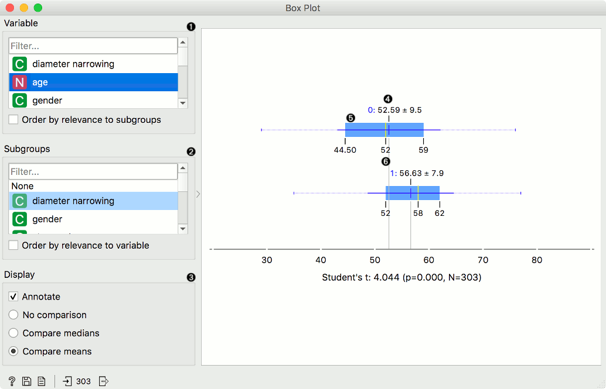
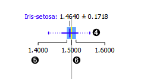
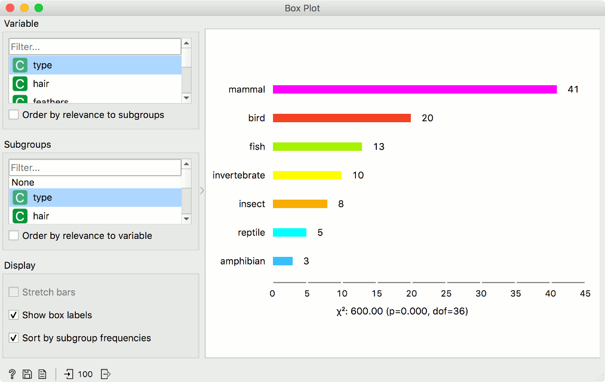
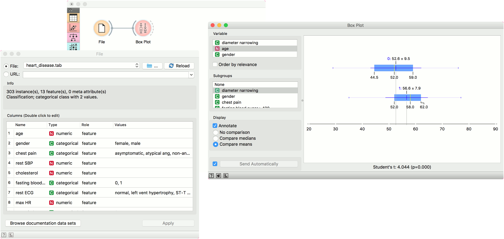
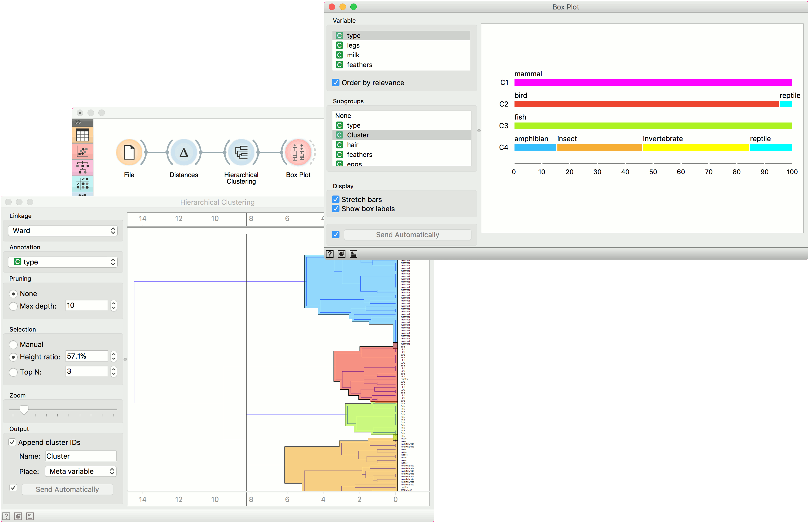

Box Plot
Shows distribution of attribute values.
Inputs
- Data: input dataset
Outputs
- Selected Data: instances selected from the plot
- Data: data with an additional column showing whether a point is selected
The Box Plot widget shows the distributions of attribute values. It is a good practice to check any new data with this widget to quickly discover any anomalies, such as duplicated values (e.g., gray and grey), outliers, and alike. Bars can be selected - for example, values for categorical data or the quantile range for numeric data.

- Select the variable you want to plot. Tick Order by relevance to subgroups to order variables by Chi2 or ANOVA over the selected subgroup.
- Choose Subgroups to see box plots displayed by a discrete subgroup. Tick Order by relevance to variable to order subgroups by Chi2 or ANOVA over the selected variable.
- When instances are grouped by a subgroup, you can change the display mode. Annotated boxes will display the end values, the mean and the median, while comparing medians and compare means will, naturally, compare the selected value between subgroups. 
- The mean (the dark blue vertical line). The thin blue line represents the standard deviation.
- Values of the first (25%) and the third (75%) quantile. The blue highlighted area represents the values between the first and the third quartile.
- The median (yellow vertical line).
For discrete attributes, the bars represent the number of instances with each particular attribute value. The plot shows the number of different animal types in the Zoo dataset: there are 41 mammals, 13 fish, 20 birds, and so on.
Display shows:
- Stretch bars: Shows relative values (proportions) of data instances. The unticked box shows absolute values.
- Show box labels: Display discrete values above each bar.
- Sort by subgroup frequencies: Sort subgroups by their descending frequency.

Examples
The Box Plot widget is most commonly used immediately after the File widget to observe the statistical properties of a dataset. In the first example, we have used heart-disease data to inspect our variables.

Box Plot is also useful for finding the properties of a specific dataset, for instance, a set of instances manually defined in another widget (e.g. Scatter Plot or instances belonging to some cluster or a classification tree node. Let us now use zoo data and create a typical clustering workflow with Distances and Hierarchical Clustering.
Now define the threshold for cluster selection (click on the ruler at the top). Connect Box Plot to Hierarchical Clustering, tick Order by relevance, and select Cluster as a subgroup. This will order attributes by how well they define the selected subgroup, in our case, a cluster. It seems like our clusters indeed correspond very well with the animal type!
